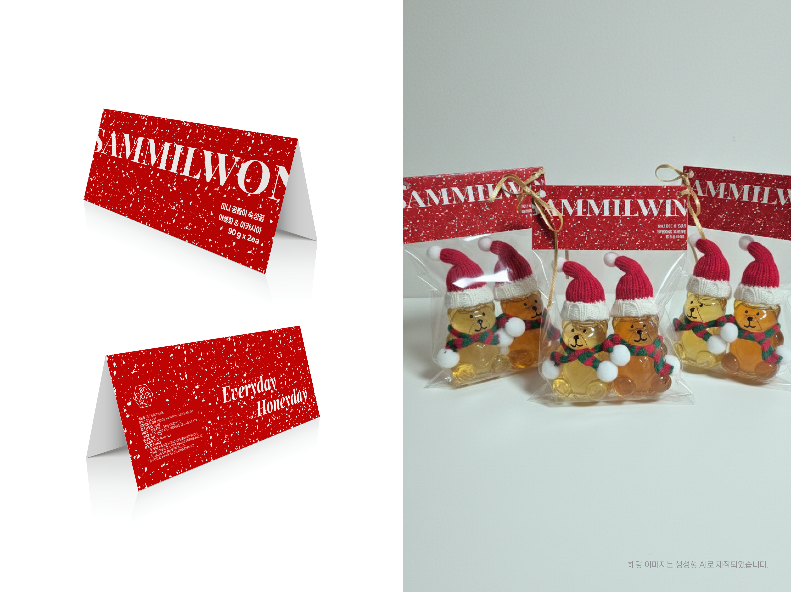
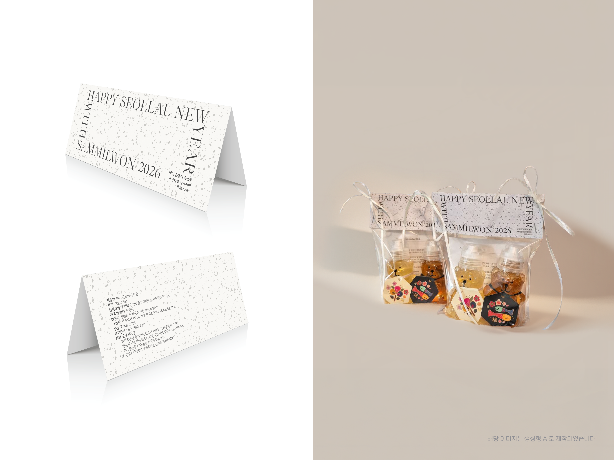
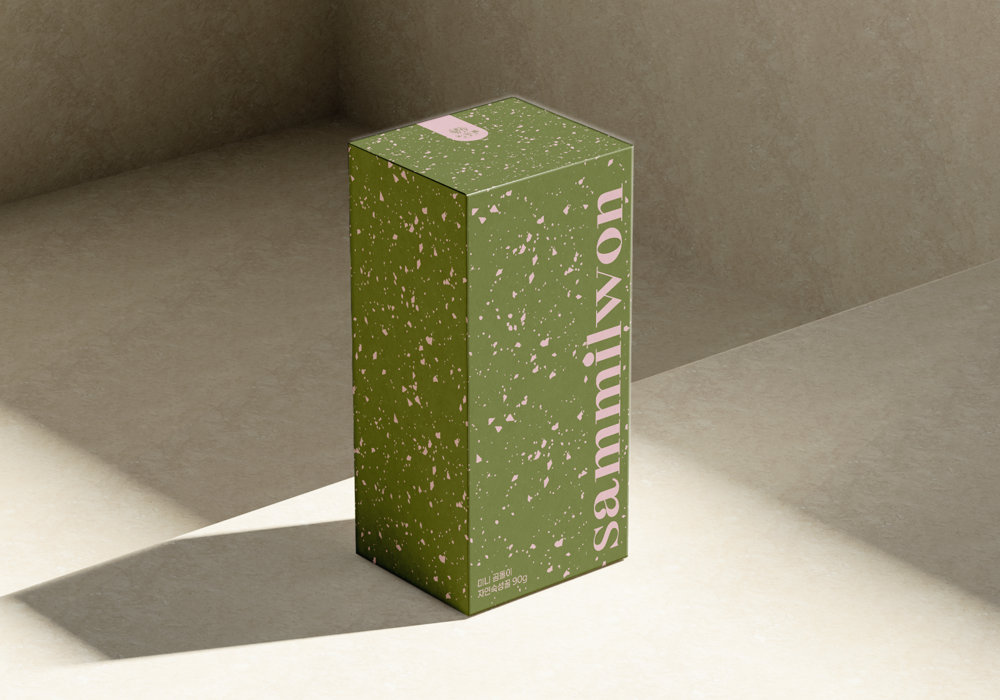
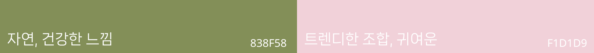

BRAND DESIGN
삼밀원 행택 패키지 디자인
크리스마스와 설날 시즌 기획 상품 패키지, 일반 상품 패키지의 기획과 디자인 개발을 담당하였습니다.
2025.12 - 2026.01
디자인 100%(일러스트레이터)

Background
지금까지의 꿀 브랜드는 토속적, 전통적 건강식품이라는 이미지가 강했습니다.
삼밀원은 기존의 꿀 브랜드의 이미지에서 벗어나 도회적이고 고급스러우면서 트렌디한 브랜드 컨셉을 강조하고자 합니다.
이러한 컨셉에 더해 자연숙성 천연 꿀의 건강함, 자연 그리고 30년 이상의 양봉 역사가 담긴 믿음직한 제품에 대한 따뜻한 마음을 전하고자 합니다.
Detail
2025년 11월, 강남 신세계 백화점에서 진행한 팝업 스토어에서 얻은 인사이트를 바탕으로 시즌 상품을 기획했습니다.
기존 메인 상품과의 일관된 브랜드 가치를 유지하기 위해 메인 상품의 패턴을 리소스로 활용해 시즌 상품으로 확장, 개선하는 작업을 진행했습니다.
크리스마스를 연상시키는 하얀 눈 같은 배경 패턴 컬러와 강렬한 레드 컬러, 그리고 브랜드명을 과감하게 배치해 화려한 크리스마스 파티를 떠올리게 하는 디자인으로 완성했습니다.

한국의 전통 명절인 설날의 분위기를 담아 먹색을 메인 톤으로 디자인했습니다.
크리스마스 기획 상품과의 연결성을 유지하기 위해 배경 패턴은 그대로 활용했습니다.
차분한 컬러와 절제된 타이포그래피, 그리고 메인 컬러의 대비를 통해도회적이면서도 고요한 한국적 멋을 표현하고자 했습니다.

Detail
새로 출시한 일반 제품의 패키지는 같은 패턴으로 일관된 브랜드 경험을 제공함과 동시에 컬러의 변화를 통해 새로운 제품의 컨셉을 드러냈습니다.

